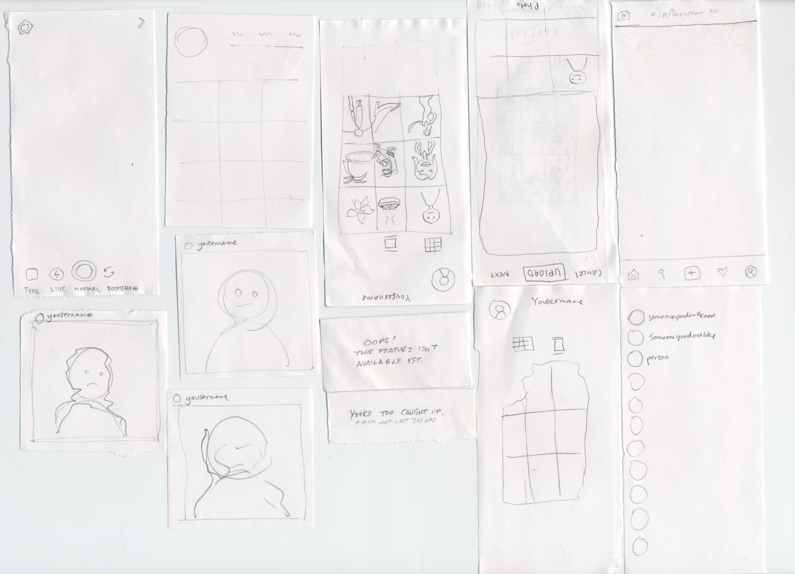

Paper Prototypes 1
Paper Prototypes 2
Each prototype was made within 10 minutes. The first was made by me and Catherine Rattana-Kelley (my project partner for the final). At first, we created the paper prototypes to look like Instagram very closely, which meant including all capabilities such as the Story, Post, and Message windows. However, once we tested this prototype twice, we realized that there were too many options for the message of the project. This helped us in determining the key parts, which would be the Profile and the Feed, supplemented with the Likes page and perhaps the Search/Explore page.